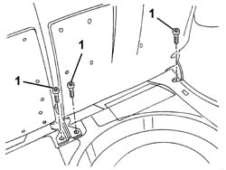
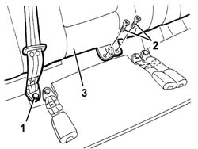
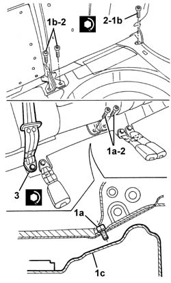
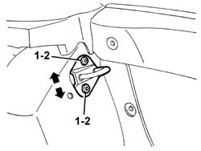

7050A14 split rear seat assembly - r+r
- Path
- Procedures > 70 FITTINGS > 7050 REAR SEATS > 7050A rear seat assembly > 7050A14 split rear seat assembly - r+r
- Kind
- repair procedure (removal / refitting; the operation number is the code)
- Applies to
- all engines; all production periods
- Interactive page
- https://sloeber94.github.io/elrnDB-a147/en/#/3025877
Applies to: all engines; all production periods
 Removing
Removing
 Refitting
Refitting7050A22 rear seat cushion - r+r (left and right sides)
7040B10 load platform (luggage platform) trim - r+r
1. Undo the bolts securing the squab to the floor.

Applies to: all engines; all production periods
1. Undo the bolt and remove the end of the seat belt.
2. Undo the bolts securing the squabs to the floor.
3. Remove the squabs.

Applies to: all engines; all production periods
Refitting
RemovingCheck that the squabs are not damaged.
Position the squabs.
1. Do up the side bolts (1a and 1b) securing the squabs to the floor.
2. Tighten the bolts securing the squabs to the floor.
 | Fastening | Component | Ø | Value (daNm) |
|---|---|---|---|---|
2 | Bolt | REAR SEAT BACKREST JOINTS. | M10 | 3.5 |
3. Position the end of the centre seat belt and tighten the bolt.
| Fastening | Component | Ø | Value (daNm) |
|---|---|---|---|---|
3 | Bolt | REAR SEAT BELT END. | M7/16' | 4.0 |

Applies to: all engines; all production periods
1. Loosen then do up the catch striker screws so that the strikers can move. Permitted adjustment movements are indicated by arrows.
Engage the squabs while allowing the strikers to centre on the locks.
Disengage and lower the squabs.
2. Tighten the striker screws.

Applies to: all engines; all production periods
Check that the squabs are engaged correctly.
Check that the central rear seat belt is working properly.